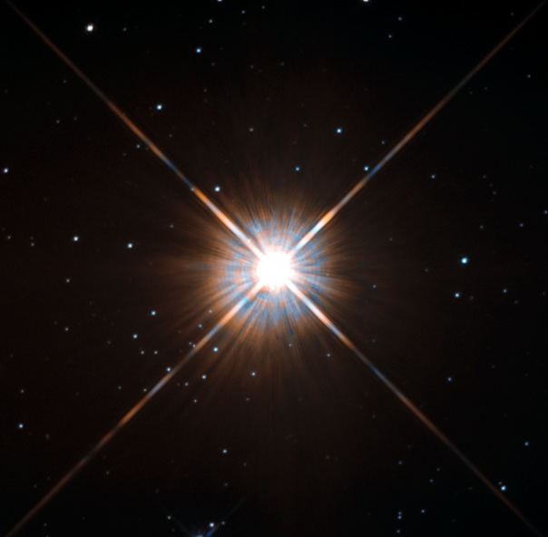

IMAGE: Proxima Centauri | IMAGE CREDIT: NASA/ESA
Dusty's Log Entry:
- Type: M-class Main Sequence Star
- Temperature: about 2,400 - 3,700 K
- Mass: about 0.08 - 0.5 Suns
- Lifespan: trillions of years
- What's Next: fading into a white dwarf
Red dwarfs are the most common stars in the galaxy, while also being the smallest of the main sequence stars. These stars are so dim that they're unable be viewed with the naked eye. When they produce helium through fusion in their core, the energy brings material to their surface where it cools and sinks back down. This process means they burn fuel very slow, as such, every red dwarf ever born is still alive today. Some scientists even believe that some low-mass red dwarfs have a lifespan longer than that of the universe. Red dwarfs are born in great numbers and have incredible lifespans, their existence makes up 75% of the Milky Way's stellar poulation.
Examples of the red dwarf includes Proxima Centauri and CHXR 73 System.